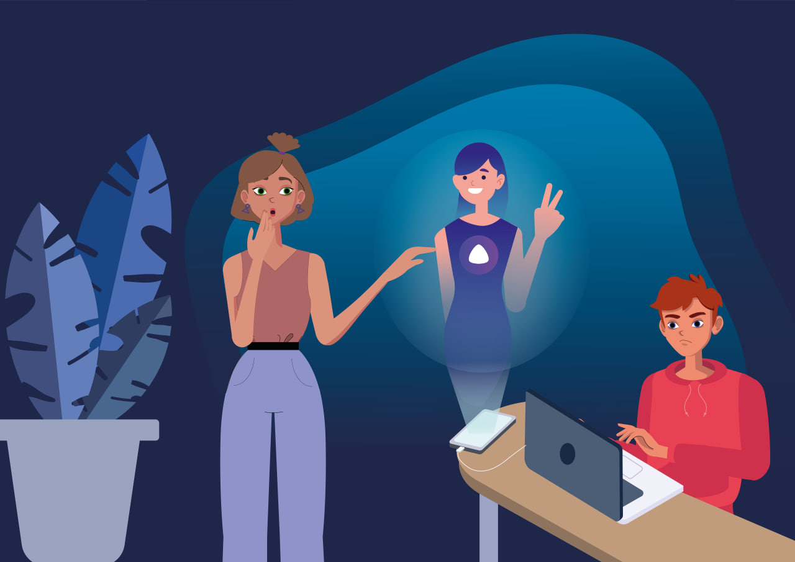
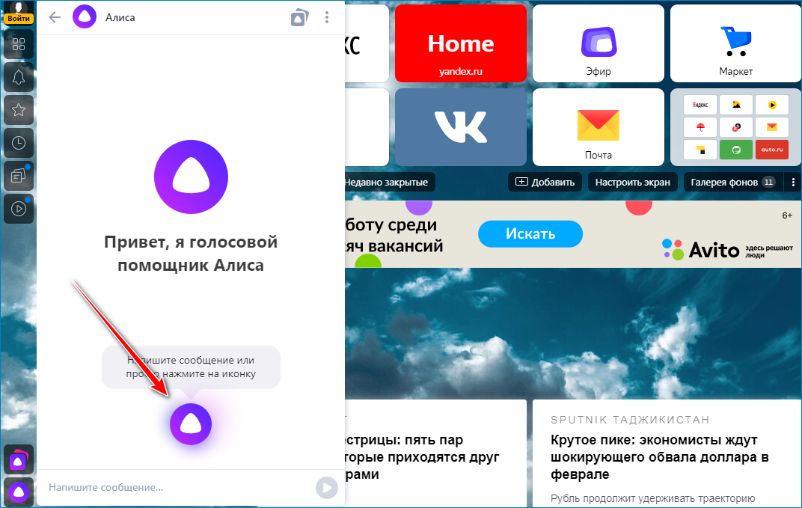

Фундаментальные знания
В отделе фундаментальных знаний будущих создателей альтернативного будущего вас встретил профессор Котанз Кинму.
— Ребята, это отдел фундаментальных знаний. Здесь, используя обучающие видео, вы сможете познакомиться с основными понятиями сферы «Технологии и искусственный интеллект».
— А сейчас мы приглашаем всех стажеров, пришедших в отдел, к просмотру мультфильма и дискуссии об альтернативном будущем. Это наш вводный семинар.
Задание 1. Голосовой помощник Алиса
Для начала профессор Кинму немного рассказал о предмете изучения отдела и того, с чем стажерам предстоит столкнуться в будущем.

Искусственный интеллект (ИИ) изменил различные отрасли и аспекты современной жизни, от здравоохранения до развлечений и от транспорта до образования. Влияние ИИ огромно и стало неотъемлемой частью нашей повседневной жизни. Виртуальные помощники с поддержкой искусственного интеллекта стали неотъемлемой частью нашей жизни.
Давайте посмотрим мультфильм об одном из таких помощников и обсудим вопросы, связанные с технологиями, которые используются для создания «умных» агентов цифрового мира.
После просмотра мультфильма ребята стали обсуждать увиденное. Один из стажеров предложил составить список того, что может характеризовать виртуального помощника Алису. Стажеры составили следующий перечень:
- Распознает естественную речь
- Поддерживает (имитирует) диалог с пользователем
- Может управлять устройствами
- Помогает находить нужную пользователю информацию
- Готовит пищу
- Предсказывает природные катаклизмы
- Делает фотографии и снимает видео
- Водит автомобиль
- Умеет обрабатывать изображения
- Работает на смартфонах
- Работает на компьютерах
- Работает на планшетах
- Работает в автомобилях
- Работает в пылесосах
- Работает в телевизорах
- Работает в устройствах бытовой техники
- Работает с помощью умной колонки Яндекс.станция
- Алиса имеет личность молодой ироничной девушки готовой помочь пользователям
Посмотрите на него. Со всем ли вы согласны или в данном перечне есть ошибки? В ответе перечислите номера ошибочных утверждений через запятую. Номера должны быть расположены в порядке возрастания.
Пример ответа:
1,2,3,7
Игры с Алисой
Первой практикой работы с искусственным интеллектом будет формирование запросов для него. Так ли просто услышать от Алисы нужный ответ на свой вопрос?
Ребята, давайте активируем Алису и будем задавать ей вопросы. Разберемся с тем, как же ее подключить, если у вас еще нет доступа к этому голосовому помощнику.
Сегодня, чтобы пользоваться Алисой можно не включать Яндекс.Браузер. Тем не менее, он должен быть установлен на ПК. Если вы решите удалить Яндекс.Браузер, то вместе с ним исчезнет и виртуального ассистента. Вот так разработчики решили связать две своих программы.
Инструкция:
- Открыть новую вкладку браузера, где расположены ячейки с закладками
- В левом нижнем углу найти кнопку вызова виртуального ассистента (рисунок ниже)
- Нажать на кнопку и появится интерфейс для общения с персональным помощником
- После этих манипуляций вы сможете общаться с Алисой только в чате. Чтобы вести переговоры с ассистентом голосом попробуйте один из вариантов
- Когда окно для чата с помощником открыто нажать на иконку в нижней части окна
- Если окно с чатом еще не открыто, то кликнуть по иконке с микрофоном рядом с кнопкой «Пуск»
- Сказать в микрофон «Слушай, Алиса»

Теперь все готово и можно задавать вопросы Алисе. Но вопросы будем задавать тематические, такие, чтобы узнать об этом виртуальном помощнике, как можно больше. Предположим, это секретный агент цифрового мира, которого мы с вами должны рассекретить.
-
Алиса, кто ты?
-
Алиса, кто твой учитель?
-
Алиса, что ты умеешь?
-
Алиса, ты умеешь шутить?
-
Алиса, ты умеешь отгадывать загадки?
-
Придумайте сами вопросы для Алисы.
В разговоре с Алисой проследите за корректностью ответов и их соответствию вашему запросу. Задайте один и тот же вопрос несколько раз и посмотрите будет ли помощник отвечать по разному.
Уважаемые стажеры, вы можете поиграть и в другие игры с Алисой, нажав на этот текст.
Внешность для Алисы
Профессор Котанз Кинму обратил внимание стажеров еще на одну особенность рассматриваемого ИИ и предложил использовать голосового помощника Алису для решения творческих задач.
— А еще голосовой помощник Алиса является источником вдохновения. Она помогает придумывать идеи, которые затем можно представить в текстовой или графической форме.
— Например, мы с вами до сих пор не знаем, как выглядит Алиса. Это и понятно — разработчики заложили лишь то, что Алиса женщина, а вот о внешности виртуального помощника не позаботились.
— Что ж, давайте вместе с Алисой, придумаем ей внешность, а затем нарисуем ее при помощи нейросетевой платформы Phygital+.
Алгоритм действий для решения поставленной профессором задачи:
-
Сформируем запрос для Алисы, в котором она опишет свою внешность. Будьте настойчивей, помните, Алиса секретный агент цифрового мира и то, как она выглядит рассказывать не хочет. Слева на рисунках вы можете видеть фрагмент диалога с успешным запросом и ответом на него Алисы.
-
Воспользуемся описанием внешности из ответа: «Имею светлый цвет кожи и длинные светлые волосы, которые собраны в хвост. Мои глаза голубые, а губы розовые. Я одета в белую рубашку с длинными рукавами и черные брюки».
*В вашем случае текст будет тем, который вы получите от Алисы
Добавим в это описание догадки от себя (у каждого стажера эти догадки могут быть свои, используйте фантазию, но не переходите грань), получим следующее: «девушка со светлыми собранными в хвост волосами, голубыми глазами, в белой рубашке с длинными рукавами и черных брюках, помощник, секретарь, менеджер».
*Самостоятельно доработайте ранее придуманный текст.
Как раз это описание будем использовать для генерации внешности Алисы при помощи нейросетевой платформы Phygital+ (можете также нарисовать внешность самостоятельно цветными карандашами на бумаге или при помощи компьютерной графики).
Открываем Phygital+: по данной ссылке. Выбираем опцию “Try out for free” (кнопка выделена фиолетовым цветом на рисунке ниже слева). Далее платформа предлагает ввести логин и пароль для входа или зарегистрироваться (рисунок ниже справа). Самый удобный способ, зарегистрироваться при помощи аккаунта Google, при таком способе вам не придется каждый раз вводить логин и пароль при входе на платформу.


Начнем эксперименты с нейросетевой генерацией изображения внешности
Алисы с выбора стиля генерации. Как вы помните. Алиса подчеркивает свое цифровое
происхождение, при выборе стиля мы предлагаем это учитывать и выбрать стиль
трехмерной анимации для изображения внешности Алиса, 
Нод для генерации изображения 
Теперь в первую ноду(блок) открытую на платформе по умолчанию вставим текстовое описание внешности, которое мы получили ранее, выберем волшебную палочку — улучшить подсказку, рисунок слева.
После выполнения всех указанных манипуляций нажмите на Start для запуска начала генерации изображения.
Ура! Внешность Алисы сгенерирована. Помните, что ваш результат может отличаться от того, к чему пришли в итоге мы, решая данную задачу.
Обратите внимание, что если вы наведете курсор мыши на результат генерации, появятся инструменты, при помощи которых вы сможете просмотреть сохранить или обработать получившийся рисунок.

Мы можем остановиться на этом. Полученный результат наилучшим образом отвечает нашему описанию. Если ваш результат не соответствует запросу, то попробуйте его изменить и сгенерировать изображение заново. Например, давайте попробуем сделать, на основе полученного изображения, еще две генерации — более реалистичную и более мультяшную. Кроме всего прочего, закрепим полученный только что навык.

Для генерации наиболее реалистичного изображения, выберем стиль Photon.
Скопируем наше описание Алисы и еще раз (под новый стиль) улучшим его при помощи волшебной палочки (снизу слева в поле описания). Соединим вариант наилучшей генерации, полученной ранее (в примере это четвертое изображение), с опцией Start image в новом появившемся ноде, как показано на рисунке ниже. Любуемся полученным результатом.

Если результат вас не устроил, то можно добавить еще один (или несколько)
нодов для генерации, уточнить описание и выбрать более удачное изображение из
получившихся ранее в качестве Start image, таким образом продолжив цепочку (на
следующем рисунке этот способ можно заметить).
Сделаем еще одну ветку для результата первой нашей генерации, чтобы получить еще более мультяшную внешность Алисы. Будем использовать стиль CuteWave3D. Рисунок ниже иллюстрирует весь процесс работы: от выбора стиля до результата.

Вопросы для обдумывания
После практического опыта работы с голосовым помощником и платформой генерации изображений Phygital+ к стажерам подошел профессор Котанз Кинму. Он задал ребятам вопросы, заставив их задуматься и порассуждать об искусственном интеллекте.
— Подумайте и вы над вопросами профессора, обсудите ответы в классе на уроке НТО, со своими наставниками или родителями, членами вашей команды или поделитесь своим мнением с друзьями.
Список вопросов:
- Как вы считаете ребята, что делаем виртуальных помощников умными?
- Должен ли виртуальный помощник понимать, то о чем вы спрашиваете?
- А что значит понимать?
- Когда мы говорим об умном человеке, мы говорим, что человек обладает интеллектом. А обладает ли интеллектом виртуальный помощник Алиса? Что делает умными электронные устройства или программы, такие как виртуальные помощники? Какие умения образуют интеллект?
- Интеллект связан с умением накапливать знания. А откуда машина берет знания?
Задание 2. Что должна уметь умная машина?
А теперь посмотрим ролик Что такое умная машина? чтобы подтвердить или опровергнуть ваши предположения.
— Пришло время подвести небольшой итог усвоенной информации: Какими интеллектуальными способностями должен обладать виртуальный помощник?
Выберите один или несколько вариантов из перечисленных ниже, которые считаете верными.
-
умение накапливать знания;
-
умение общаться и взаимодействовать с помощью языка;
-
умение понимать;
-
умение обучаться и самообучаться;
-
умение логически мыслить;
-
все вышеперечисленное.
Теоретические основы необходимые для работы в отделе
Профессор Котанз Кимну предложил стажерам ознакомиться с еще одним небольшим видеофрагментом.
После просмотра профессор задаст вам несколько вопросов, чтобы проверить внимательность ребят, претендующих на должность стажеров в компании!
Задание 3. Что такое искусственный интеллект?
— Первый вопрос на определение и понимание искусственного интеллекта. Будьте внимательны!
Выберите один или несколько вариантов из перечисленных ниже, которые считаете верными.
-
Искусственный интеллект — это наука, которая создает математические модели и алгоритмы интеллектуальных способностей человека, а программисты воплощают эти модели в программах компьютера и роботах.
-
Искусственный интеллект — это способность компьютерных систем выполнять творческие и интеллектуальные функции, которые традиционно считаются человеческими.
-
Искусственный интеллект объединяет в себе несколько научных направлений: нейронные сети, машинное обучение, обработку естественного языка, когнитивные вычисления, компьютерное зрение
-
все вышеперечисленное верно.
Задание 4. Учёные и достижения
— А теперь посмотрим как вы запомнили известных личностей в нашей сфере.
Сопоставьте учёного с его ролью в развитии науки «искусственный интеллект»
|
1 |
Алан Тьюринг |
А |
В 1951 году сформулировал принципы организации вычислительных систем, которые легли в основу современных персональных компьютеров |
|
2 |
Норберт Винер |
Б |
В 1950 году вышла его знаменитая статья "Вычислительные машины и разум" , в которой ученый предложил тест, связанный с определением мышления искусственной системы |
|
3 |
Джон фон Нейман |
В |
В 1948 году сформулировал важнейший принцип кибернетики, который гласит: «нет пропасти между живым организмом и неживым автоматом». |
|
4 |
Сэмюэл Х. Олтмен |
Г |
американский специалист в области компьютерных технологий и когнитивистики. Он был одним из основателей дисциплины искусственного интеллекта. Он был соавтором документа, в котором ввел термин "искусственный интеллект" (AI), разработал семейство языков программирования Lisp |
|
5 |
Джон Маккарти |
Д |
американский предприниматель, инвестор, программист и блогер. Он является генеральным директором OpenAI. Ему мы обязаны созданием всё более совершенных и продвинутых нейросетей на основе языковых моделей, а вместе с ними — ChatGPT |
Перечислите буквы, соответствующие цифрам, по возрастанию, например "ВГДАБ"
Задание 5. Что мы знаем о виртуальных помощниках?
— Неплохо! Хочу добавить некоторую информацию, прежде чем вы перейдете дальше.
— Виртуальный помощник представляет собою интернет-ресурс или программное обеспечение для мобильных устройств и ПК, которое, по сути, выполняет все функции личного секретаря для пользователя. Виртуальному ассистенту под силу создавать различные напоминания, осуществлять выбор мест для отдыха, помогать в поиске и бронировании столиков в заведениях и различного рода билетов, заказывать по адресу такси. Помощник умеет самостоятельно обучаться с учетом выполненных заданий, производя анализ поведения и всех увлечений пользователя.
— Одним из наиболее важных различий между виртуальным помощником и предшествующими ему поколениями планировщиков является то, что виртуальный ассистент в работе учитывает контекстные обстоятельства – то есть, во внимание принимается ряд условий, в которых находится пользователь. Современные виртуальные помощники становятся все более похожими на человека: у них есть имя, характер и даже в некоторых случаях внешность. Характер — это, пожалуй, самый сложный элемент любого виртуального помощника. Разработчики пытаются найти баланс между безликостью и индивидуальностью, чтобы ассистент мог поддержать живой диалог, но в то же время не высказывал свое мнение по противоречивым вопросам и сохранял нейтралитет.
— А теперь попробуйте сопоставить имена виртуальных помощников, представленных ниже, с их описанием.
| 1 | Алиса | А | Первый чат бот мастерски пародировал общение с психотерапевтом. На основе «слов-якорей» выстраивал вопросы в мастерский диалог, который мастерски копировал врача. «Общаться» с ним предлагалось через телепринтер, вбивая там соответствующие запросы. Это было за четверть века до создания самого первого персонального компьютера в 1966 году. |
| 2 | IBM Watson | Б | Этот виртуальный собеседник, разработанный в 1972, создавал диалог с человеком, страдающим параноидной шизофренией. Интересно, что во время тестирования в исследовании принимало участие несколько десятков опытных психиатров. Задачей исследования было выяснить, где человек, а где машина. И большая часть докторов правильно ответить не смогла. |
| 3 | Bixby | В | Технически это сервис искусственного интеллекта, а не чат-бот сам по себе, который выиграл в популярном американском шоу ответов на вопросы Jeopardy! в 2011 году. |
| 4 | Siri | Г | Это пример чат-бота от Apple, который действует как личный помощник: реагируют на голосовые команды и способен отслеживать электронную почту, календари, системы домашней безопасности и другие задачи. |
| 5 | Alexa | Д | Это пример чат-бота от Samsung, который действует как личный помощник: реагируют на голосовые команды и способен отслеживать электронную почту, календари, системы домашней безопасности и другие задачи. |
| 6 | Cortana | Е | Это пример чат-бота от Microsoft, который действует как личный помощник: реагируют на голосовые команды и способен отслеживать электронную почту, календари, системы домашней безопасности и другие задачи. |
| 7 | ELIZA | Ё | Это пример чат-бота от Google, который действует как личный помощник: реагируют на голосовые команды и способен отслеживать электронную почту, календари, системы домашней безопасности и другие задачи. |
| 8 | Google Assistant | Ж | Это пример чат-бота от Amazon, который действует как личный помощник: реагируют на голосовые команды и способен отслеживать электронную почту, календари, системы домашней безопасности и другие задачи. |
| 9 | PARRY | З | Это пример чат-бота от компании Яндекс, который действует как личный помощник: реагируют на голосовые команды и способен отслеживать электронную почту, календари, системы домашней безопасности и другие задачи. |